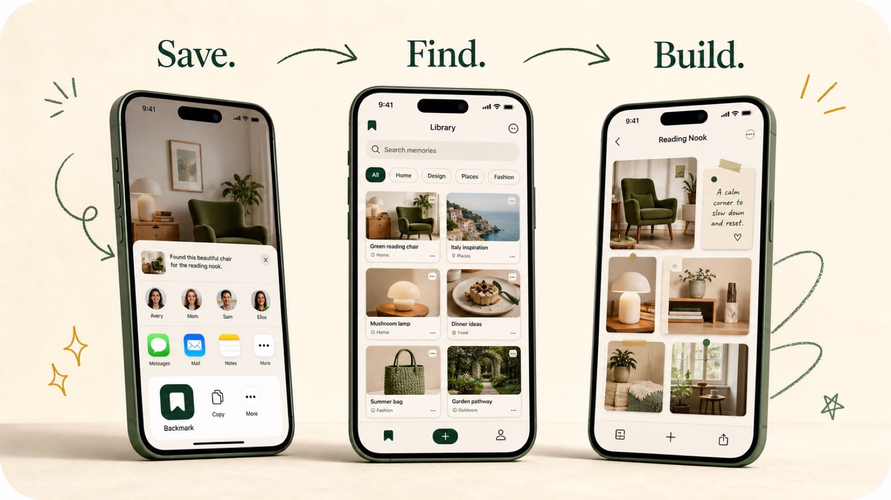

Save anything.
Use the iOS Share button or Back Tap to keep something worth remembering. Choose Library or a Board, and a topic if you like, before you save.
PRIVATE BY DESIGN · FOR IPHONE
Keep links, screenshots, posts, and files together with their preview, source, and searchable text, then turn your Memories into something useful.
ONE SIMPLE FLOW

Use the iOS Share button or Back Tap to keep something worth remembering. Choose Library or a Board, and a topic if you like, before you save.
Search everything at once, browse by where it’s from or by topic, and make your own tiles. Titles, summaries, tags, and text recognized from your screenshots are all searchable.
Turn related Memories into a plan, comparison, study pack, or your own result. On compatible iPhones with Apple Intelligence, ask questions answered only from that Board and create an editable cover.
NEW IN 1.1
Save Apple Maps and Google Maps links, or add a place to any Memory. A Board with two or more places shows a planned walking or driving route, in the order you choose. No location permission needed.
Import a bookmarks file from Safari, Chrome, Firefox, or Edge. Sort by folder, or let Apple Intelligence sort them into topics on your iPhone without opening the pages.
Share a Board as a set of images with every original link. Export everything as one zip you can open anywhere, and restore it on any iPhone.